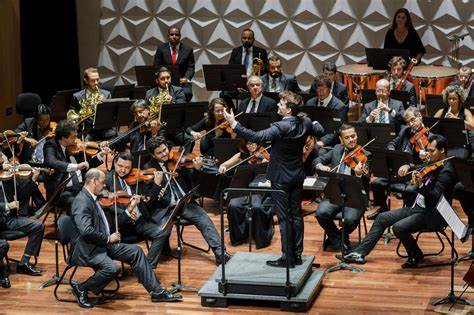

Página de Mídia Interativa
Esta página contém links, imagens e vídeos.
Links:
Google
Wikipedia
Vídeo no YouTube
Imagens:

Vídeo Local:
Seu navegador não suporta a tag de vídeo.
Vídeo do YouTube Incorporado: